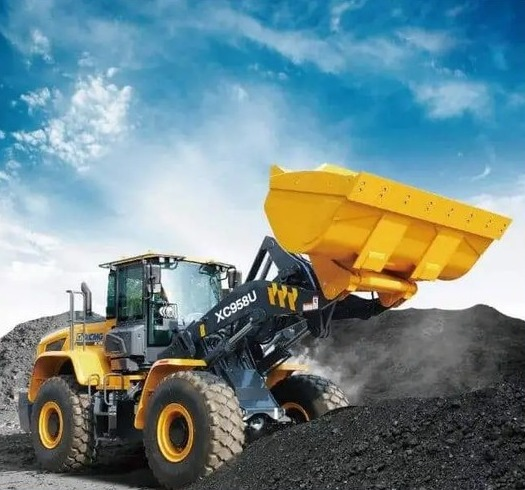
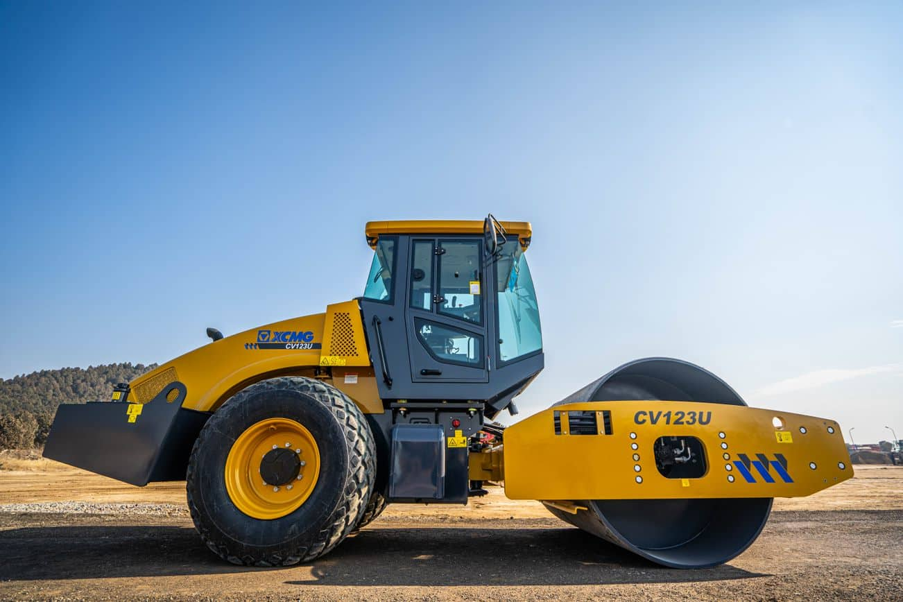
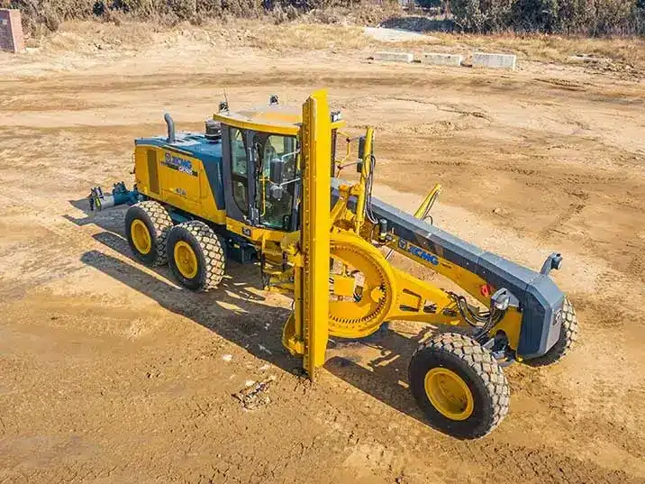
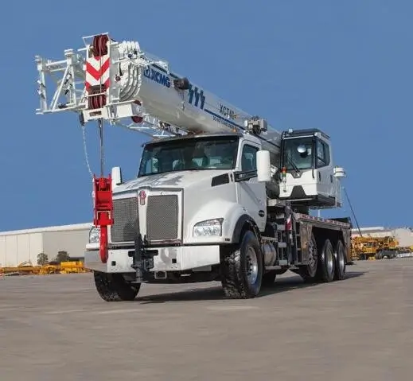
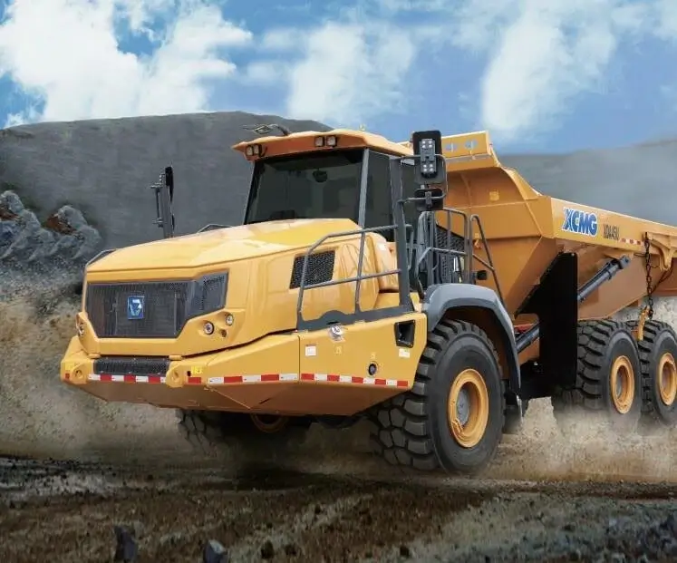
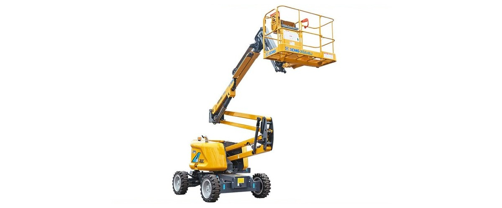
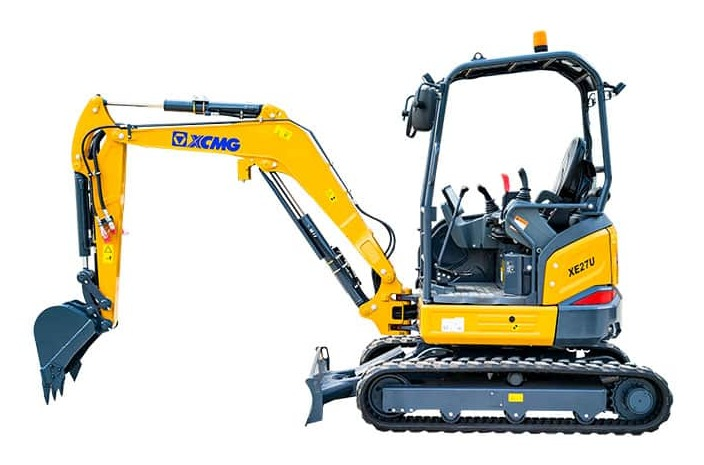
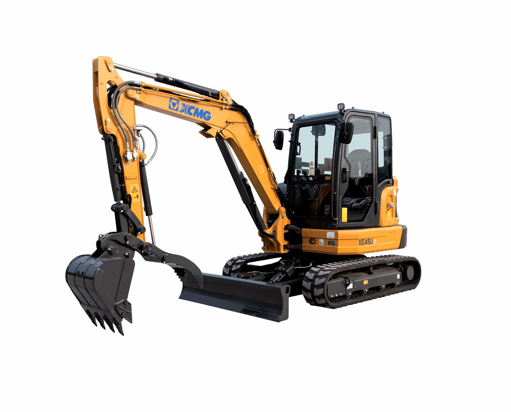
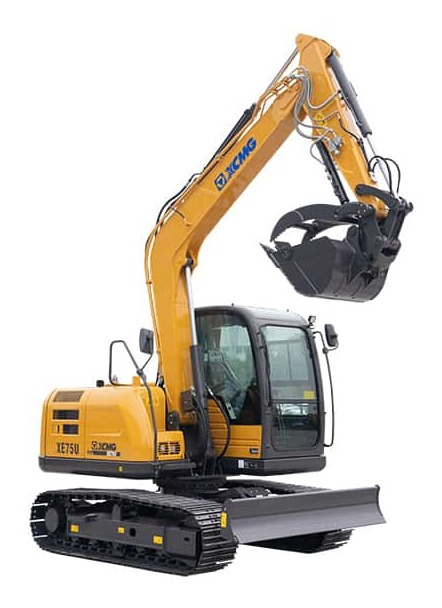
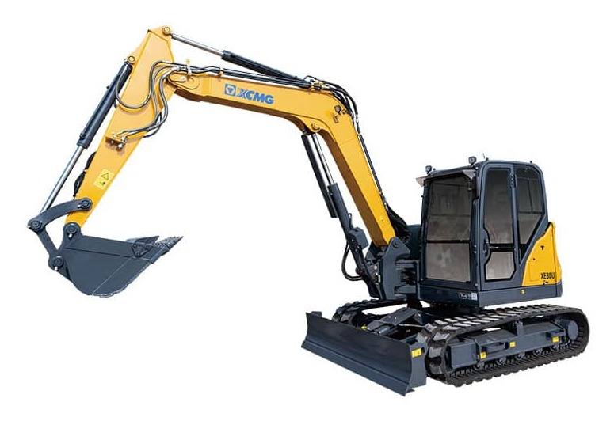

XCMG USA Product Benchmark Platform
全产品线竞品对标平台
面向产品、销售和管理层的竞品竞争力总览，统一沉淀产品参数、配置差异、工况表现和数据来源。
7产品线覆盖
7挖掘机吨级分析
62对标产品型号
7原始数据表
XCMG USA Product Benchmark Platform
面向产品、销售和管理层的竞品竞争力总览，统一沉淀产品参数、配置差异、工况表现和数据来源。
按 XCMG USA 产品线组织对标维度。小型挖掘机已沉淀完整竞品数据，其他产品线按同一口径归集关键竞争力维度。


重点围绕装车效率、斗容匹配、行驶效率、油耗和驾驶舒适性。

重点围绕压实能力、振动参数、转场效率和维护便利性。

重点围绕平地精度、牵引能力、刀板控制和驾驶辅助配置。

重点围绕起重能力、工况表、支腿布置、转场效率和安全系统。

重点围绕载重、动力、矿区循环效率、制动性能和维护成本。

重点围绕作业高度、平台载荷、越野能力、电池系统和租赁适配。
七个吨级使用同一分析框架，覆盖典型工况、竞品参数、配置贡献、综合排名、提升模拟和原始数据。

对比卡特、迪尔、山猫、久保田、沃尔沃、现代、斗山、三一等竞品，聚焦入户、市政、租赁和短循环场景表现。

对比卡特、迪尔、山猫、久保田、沃尔沃、现代、斗山、三一等竞品，聚焦窄场地、沟槽、装车和属具适配。
对比沃尔沃、现代、迪尔、卡特、山猫、斗山、久保田、三一等竞品，聚焦狭窄空间、沟槽、土方装车、破碎、坡地和租赁场景。

对比卡特、山猫、久保田、洋马、现代、斗山等竞品，聚焦运输边界、沟槽能力、土方短循环、属具适配和租赁通用性。

对比卡特、迪尔、山猫、久保田、沃尔沃、现代、斗山、三一等竞品，聚焦装车效率、液压系统、破碎属具和驾驶安全配置。

对比卡特、迪尔、小松、神钢、三一等竞品，聚焦沟槽深挖、土方装车、破碎属具、坡地稳定和运输限制。

对比卡特、迪尔、山猫、久保田、沃尔沃、现代、斗山、三一等竞品，聚焦深挖覆盖、装车循环、液压属具、吊装稳定和转场运输。
ARC 不是参数表汇总，而是把竞品数据转化为产品定位、短板识别、配置策略和销售论证。领导层可以直接看到 XCMG 在不同吨级、不同工况下的优势、差距和补强方向。